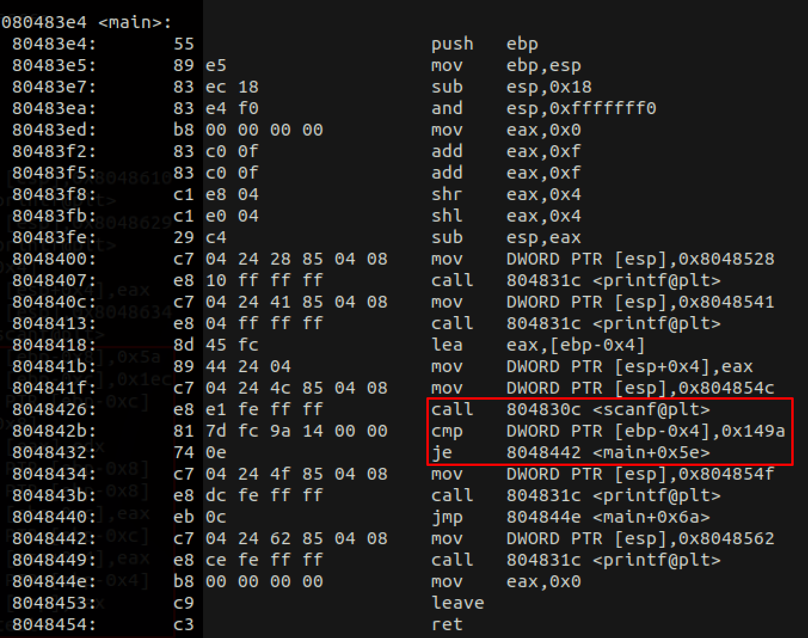
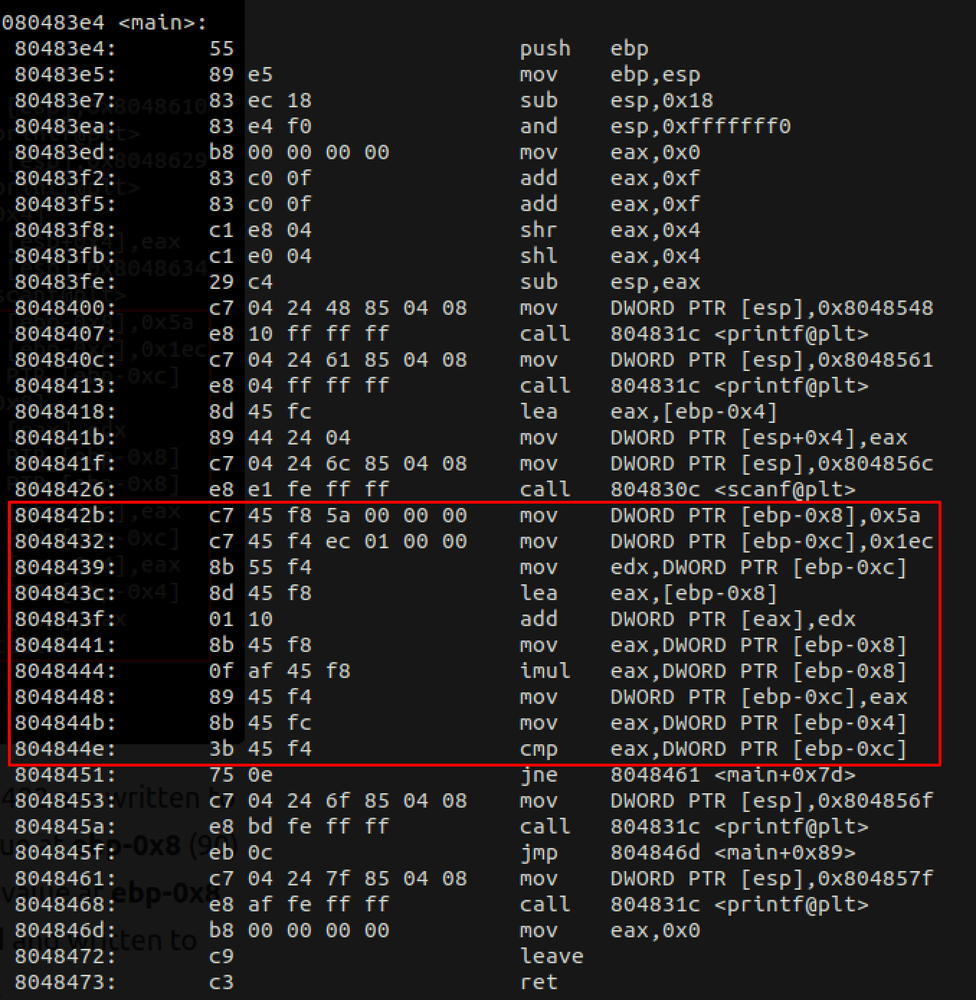
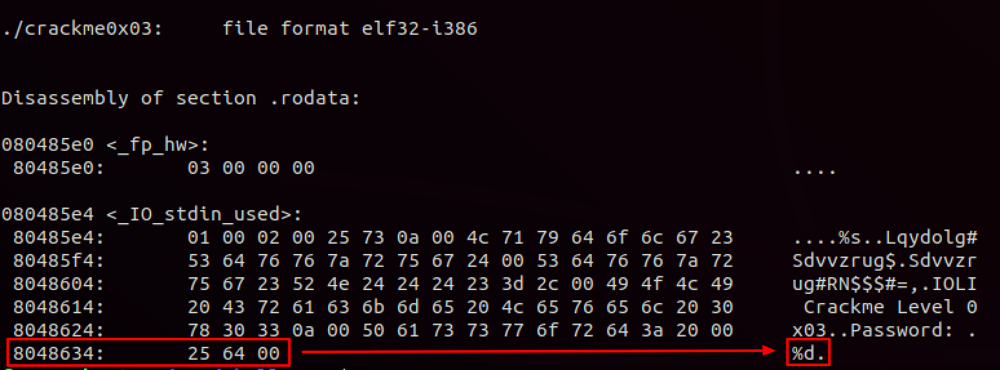
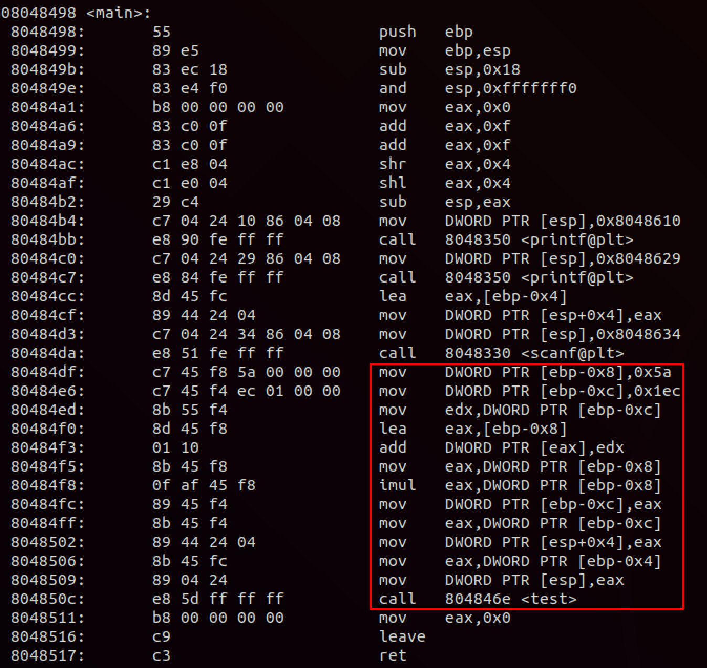
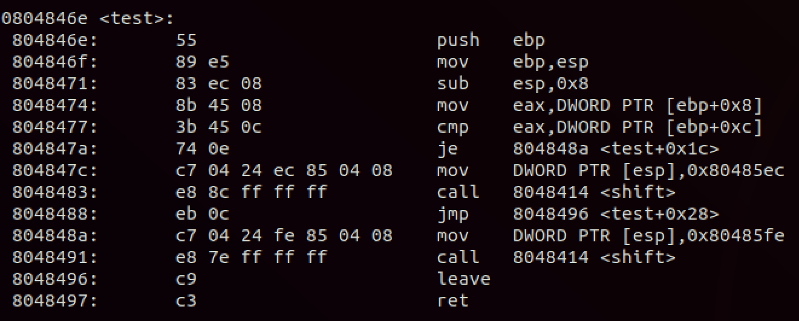
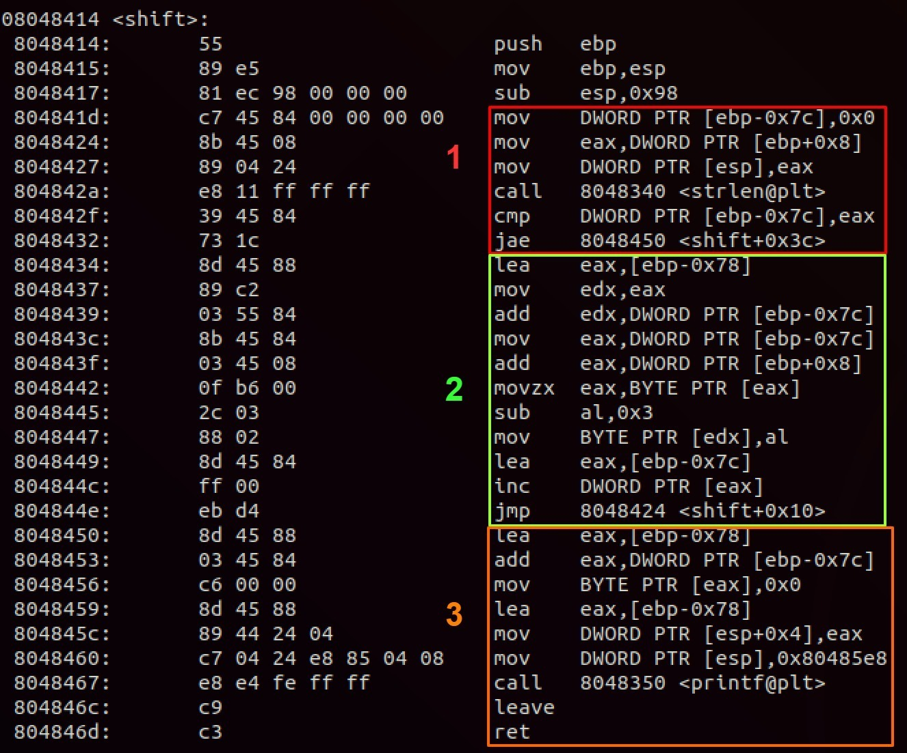
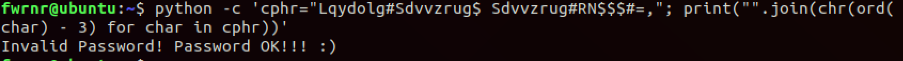
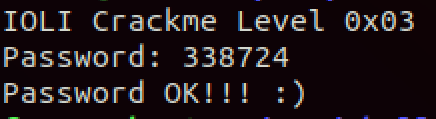

This blog post is a series of write-ups for the IOLI reverse-engineering crackmes. It will end up pretty lengthy as it’s intended to be comprehensive. I will be uploading 3 solutions at a time on this blog post. You can skip to any single challenge using the following links:
Challenge 1
Challenge 2
Challenge 3
Challenge 1

This challenge consists of a simple comparison inside main() that checks if the user’s input (interpreted as a signed-integer) is equal to the value 0x149a and outputs a success message if they are equal (this can be inferred from reading the strings stored in the executable’s .rodata section).
I attempted to switch flip the endianness of this value to 0x9a14, convert to decimal (39444) , and then enter this as the password, but the comparison conditional branch jump did not succeed. This should be the correct password in 32-bit context, I am running the challenges compiled for 32-bit on a 64-bit OS, so the values are likely being considered as big-endian. In which case, the correct password is 0x149a converted to decimal, which is 5274.
Challenge 2

This program’s main() routine contains a call to scanf at 0x8048426 that stores the output as a signed decimal integer at ebp-0x4.
This program then assigns a local variable on the stack with the value 0x5a (90) and another local variable with the value 0x1ec (492), it then adds these two variables variables resulting in 582 and squares this to make 338724.
The user’s input is then interpreted as a signed decimal integer using scanf() and compared to 338724, if the operands in the comparison are equal, the program follows a conditional branch that prints a success message (this was again inferred from referencing the inline string addresses used in the .rodata section).
Challenge 3
At first glance, challenge 3 does not appear to contain any useful strings. When viewing the binary in objdump, it becomes clear that this is the first challenge that uses more than one function, as all previous challenges were solvable by analysing main().
There are 3 non-library functions in this binary: main(), test() and shift(). Let’s start by analysing main().
Analysing main

All instructions in the red box marked 1 are part of the function prologue, these allocate space for the stack-frame and aren’t of too much interest to us.
As for the Instructions in the green box marked 2, we can ignore the first 2 calls to printf() as we know they represent the introduction and password prompt messages.
At instruction 0x80484cc a local variable at address ebp-0x4 is loaded into eax and then placed on the stack as a second argument to a scanf() call in the binary, from this we can infer that our input to the program will be stored at ebp-0x4 and should watch for this address being used elsewhere in the function.

An address is then placed at the top of the stack as the first argument to scanf(), this is the format string that controls the way data is scanned and stored from scanf()’s input. As annotated in the image above, the format string address points to a string containing a single format-specifier: %d
This specifier denotes a signed-integer, so we now know the correct password for this binary will be numerical as it is scanned in as an integer value.

From address 0x80484df to 0x8048e6 the integers 90 and 492 are written to addresses ebp-0x8 and ebp-0xc respectively. Then, the value at ebp-0x8 (90) is incremented by the value of ebp-0xc (492), meaning the value at ebp-0x8 is now 582 (492 + 90). The value at ebp-0x8 is then squared and written to ebp-0xc, ebp-0xc now contains the value 338724 (582 ^ 2).
Once the above is complete, the program takes the value 338724 from ebp-0xc, and writes it to esp+0x4 (1 DWORD away from the top of the stack), the instruction that follows writes the value located at ebp-0x4 to the top of the stack, the function test() is then invoked.
If you remember from above, the value in ebp-0x4 is significant, as it is the integer stored from the call to scanf(), this is the number we input as our password. It’s apparent that the compiler used to compile these challenge binaries is implementing the cdecl calling convention, whereby arguments for functions are passed on the stack in reverse order. Considering this, we can infer that test’s function signature is as follows:
void test(int user_input, int num)
We also know from following the arithmetic operations that the argument ‘num’ will always be the value 338724, therefore, the main function can be decompiled by hand as follows:
int main()
{
int input;
scanf("%d", input);
test(input, 338724);
}
Analysing test
As we have a good understanding of main, and know the arguments it passes to the test function, we can now analyse test to see what it does with this data and how it makes decisions. Here is the disassembly of the test function:

This function compares its two integer arguments, if the arguments are equal it calls shift with a string as its argument, if not, it calls shift with a different string as its argument. These are likely to be the success and failure messages the program outputs.
When looking at what data lies at the above mentioned addresses, we can see they look unintelligible, but they they look like they resemble English from eye-level frequency analysis. Let’s verify this hypothesis…
Analysing shift
As we inferred from the test function, the shift function takes an argument of a string, now we need to analyse the assembly to understand how the function uses the string.

In the red section marked 1, the function initializes a stack variable ebp-0x7c with the value 0, this variable stores the shift routine’s iteration count. Next, it retrieves the length of the string argument, and compares it to the iteration count to determine whether the final character has been operated on or not.
If the final character has been operated on, then the routine is complete and the function jumps to the orange section marked 3, where it places a null-byte at the end of the shifted string and prints the string.
If the final character has not been operated on, the function continues into the green section marked 2. edx and eax are set to destination and source buffers respectively, and both are offset by the iteration count. The current byte in the source buffer is then decremented by 3 and written to the current byte in the destination buffer. The iteration count is then incremented.
The function then jumps to re-perform the check on whether the number of iterations is equal to the length of the string. This is what iteration looks like in assembly language.
This routine could be decompiled as follows:
void shift(char* encrypted_str)
{
char[124] cleartext_str;
int i;
for(i = 0; i < strlen(encrypted_str); i++)
{
cleartext_str[i] = encrypted_str[i] - 3;
}
cleartext_str[i] = '\0';
printf(cleartext_str);
}
So, now we understand the implementation of shift(), we can apply the algorithm used to decrypt the strings to find out what the strings signify about each path in test()

As you can see in the above image, I shifted each character in the string 3 bytes lower using python, the result shows that the second string located at 0x80485fc decodes to ‘Password OK!!! :)‘.
Looking back at the test function, we know which path is the one taken given a correct password, shift is called with the password ok string as its argument only when the user inputted the number 338724 as their password. Therefore, 338724 is the correct password to solve this challenge.
